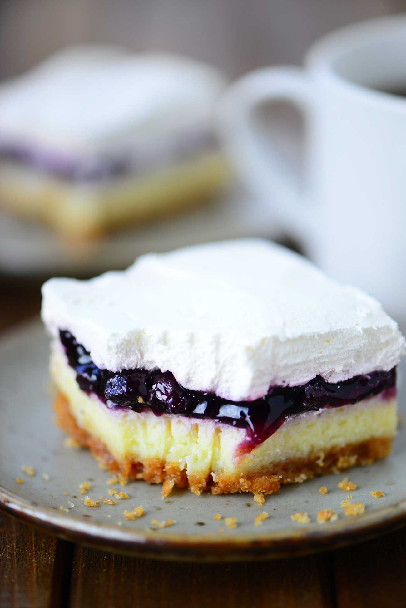

Que faire avec un blender : 45 recettes super fresh pour mixer tout l’été - Cuisine Actuelle
2021.04.01 12:19
Naviguez dans l'univers
Naviguer dans l'univers
Menu Fermer Mon carnet Mon carnet de recettes Mon carnet Mon carnet de recettes Se connecter Mon profil Mon carnet de recettes Gérer mon profil Déconnexion Mes listes de courses Mon carnet de recettes Recettes Recettes par plat Apéritif Entrée Plat Dessert Boisson Sauce Pain & viennoiserie Recettes par ingrédient Légume Viande Poisson Fromage Fruit Chocolat Recettes Santé & allergies Minceur Végan Végétarien Sans lactose Détox Sans sucre Sans gluten Recettes par thème Recettes de bases Recettes traditionnelles Recettes pas chères Recettes faciles Recettes rapides Recettes de saison Recettes pour enfants Recettes originales Inspirations Cuisine du monde Cuisine régionale Fêtes & évènements Chandeleur Fête des mères Mardi gras Pâques Noël Galette des rois Ramadan Modes de cuisson Robots culinaires Four Cocotte Micro-ondes Vapeur Barbecue Wok Plus d idées Apéro dînatoire Brunch & Petit déjeuner Buffet Panier pique-nique Réception Tea time Recettes gastronomiques Recettes de chefs Idées de menus Idées de repas Repas de fêtes Idées apéro Tendances Quel vin pour quel plat ? Pâques Guide du bien manger Que faire avec ? Nutrition Recettes healthy Astuces de cuisine Magazine Vidéos Recettes en vidéo 1 technique / 1 minute Concours S'abonner au magazine S'abonner au magazine Je m abonne Mon carnet Accueil Idées de menus Tendances © Nicol/Sucré salé le 20 juillet 2016 à 14h03Que faire avec un blender : 45 recettes super fresh pour mixer tout l’été
Voir les photos Imprimer la page Copier le lien Lien copié ! Partager sur Facebook Partager sur Twitter Partager sur PinterestDes recettes fraîches et vite prêtes ? C'est ce que nous vous proposons avec ce diaporama spécial blender. Vroum vroum !
Composé d’un bloc moteur et d’un bol haut, muni d’une poignée, d’un couvercle hermétique et de lames tranchante en métal, situées au fond, le blender est l’accessoire indispensable pour réaliser smoothies, milkshakes, lassis, gazpacho, cocktails, granités, coulis, mousses ou crèmes glacées en quelques secondes. Sa puissance permet à ses lames de piler de la glace ou de préparer des préparations liquides en un clin d’œil.
Rapidement, et à force de mixer, vous aurez envie de réaliser vous-même, vos propres recettes. Et vous ferez forcément preuve de créativité. Cela tombe à pic, car en terme de smoothies, milkshakes, lassis, etc… il n’y a pas de limite à l’imagination. Tous les fruits ou les légumes de saison sont évidemment utilisables, seuls ou mariés les uns avec les autres. Bref, toutes les combinaisons sont possibles, pourvues qu’elles vous plaisent.
Côté milkshake, vous vous régalerez avec un Milshake santé à la framboise > > , un Milk-shake à la vanille > > , un Milk-shake énergétique > > , un Milk-shake aux fraises > > , ou un Milk-shake fraise banane > > .
Mais vous pourrez également réaliser du Lassi au concombre > > , du Lassi parfumé à la rose > > , du Lassi menthe citron > > ou du Lassi à la mangue > > .
Les smoothies pourront être réalisés avec des pêches et des abricots > > , des fruits rouges givrés > > , un concombre et un kiwi > > ou bien de la pomme et du melon > > .
Enfin, votre blender vous permettra de réaliser de la Mousse de ricotta aux abricots et aux pistaches > > , de la Mousse de ricotta aux fruits rouges > > , un coulis de fraise > > , de mangue > > , de framboises > > , ainsi qu’un Gaspacho > > , une soupe de concombre > > , un granité fraise et tomate > > ou bien une crème glacée à la banane séchée > > .
Amateurs de recettes express, découvrez également la recette de la glace sans sorbetière :
Contenus sponsorisés
Nos coups de
4.1Mystère géant super facile à faire
4.9Guacamole au blender
4.5Faire une citronnade
3.4Faire des oeufs au plat
4.4Pâte à crêpes au blender
Contenus sponsorisés
Nouveau coaching gratuitCuisine Anti-gaspi
Courses, conservation et idées recettes : 1 mois pour apprendre à cuisiner sans gaspiller
Contenus sponsorisés
Vous avez aimé cet article ?
Ajoutez cet article à votre carnet de recettes et retrouvez le facilement !
Sauvegarder cet article Article sauvegardéNos coups de food
4.2Pâte brisée au mixer
4Banane en smoothie au blender
5Faire des tomates séchées
4.4Faire des chips de pommes
3.3Cake à la banane super facile et super bon
5Mix Cookies Cups
4.2Le super planteur
3Super croquettes de poulet
3.3Madeleines super faciles
5Pina colada sans blender
5Pain super moelleux
4.3Bûche norvégienne super express
2.8Tomate-mozza super originale
4.4Koulibiac super croustillant (en vidéo)
5Salade d’été
5Cookies super fondant
Cuisine Actuelle vous livre toutes ses recettes de cuisine ©2021 - Prisma Média - Tous droits réservés Conditions générales d utilisation Paramétrer vos cookies Mentions Légales Charte pour la protection des données Publicité Contacts & Crédits Votre kiosque Fréquentation certifiée par l'OJD - Un site du groupe Prisma Média (G+J Network)